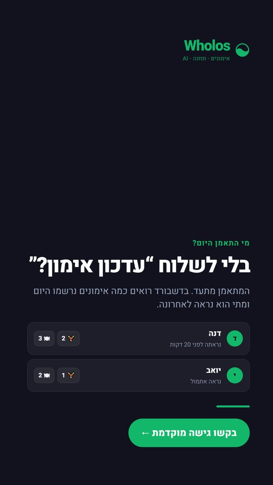
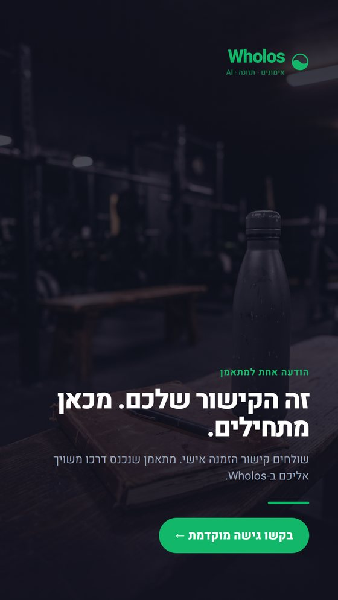
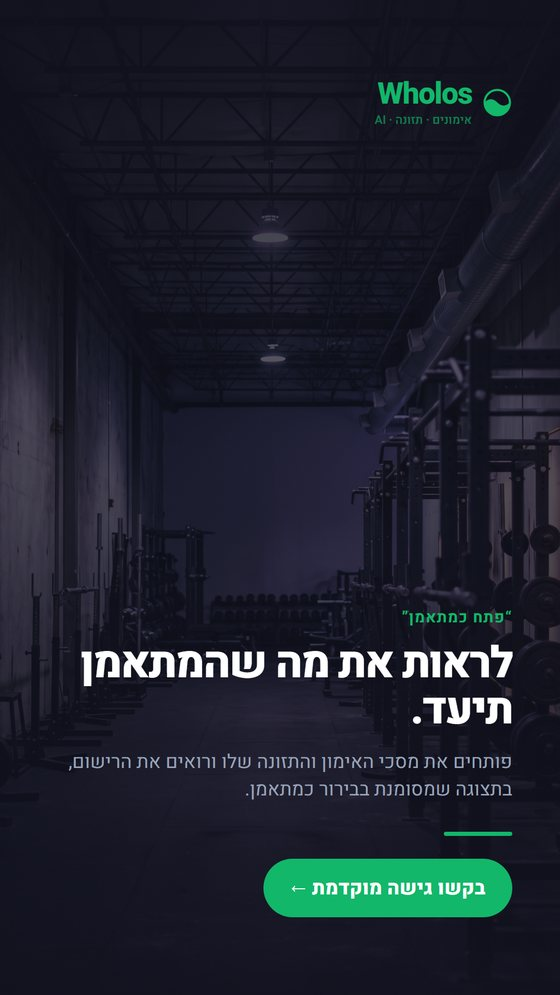
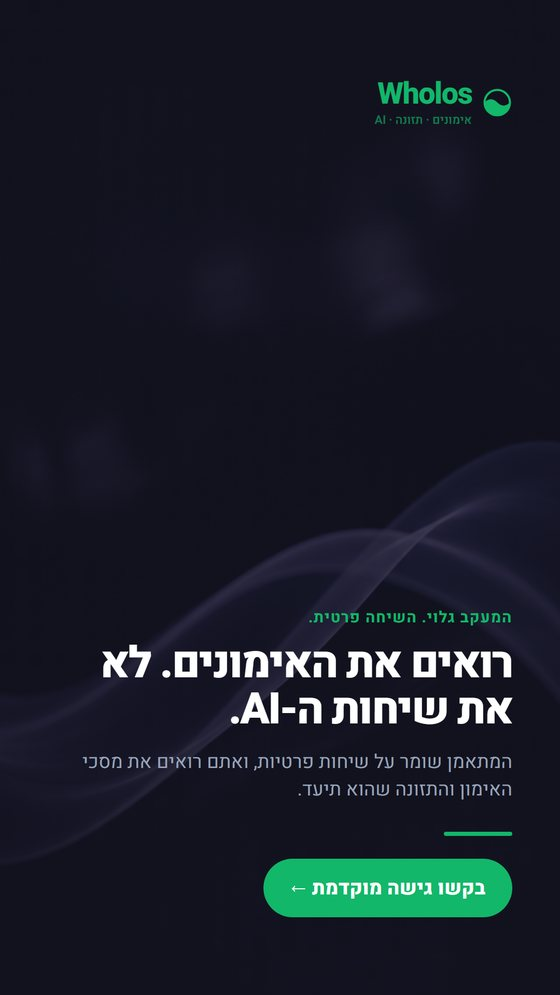
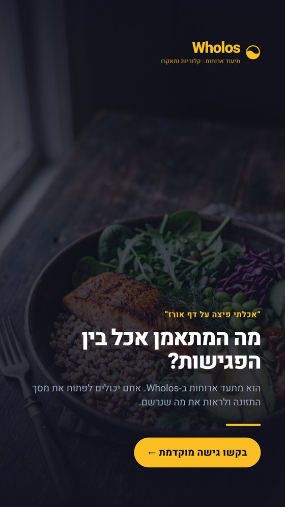
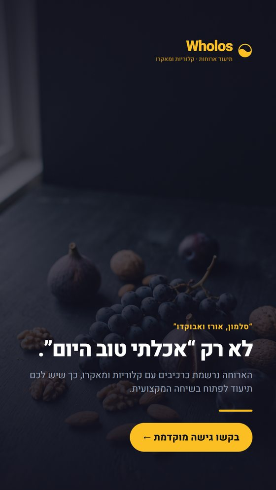
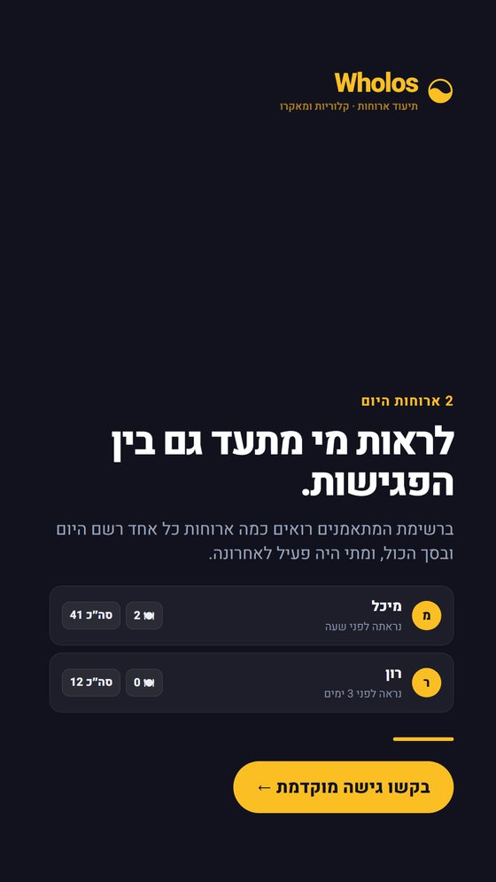
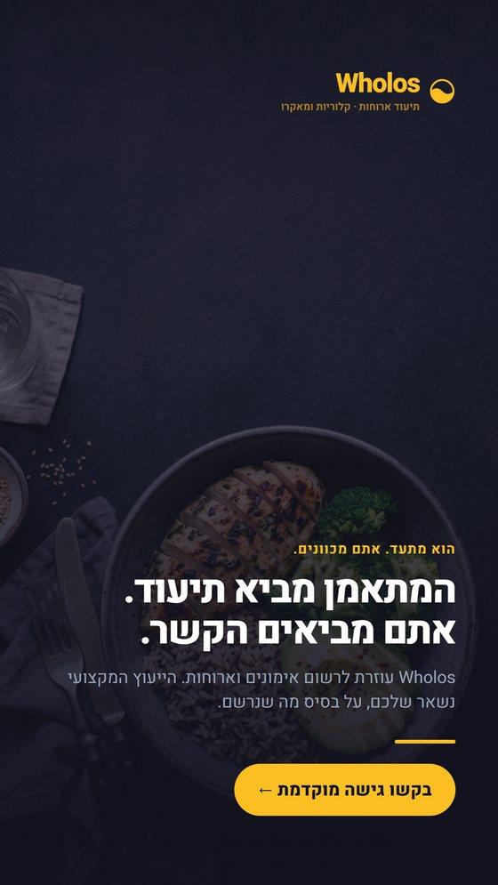
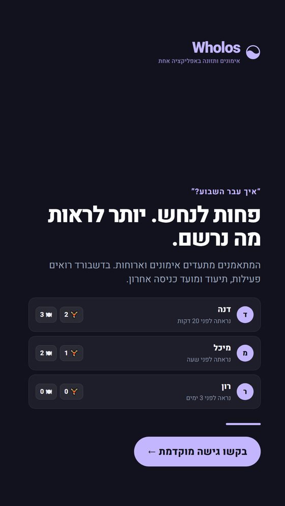
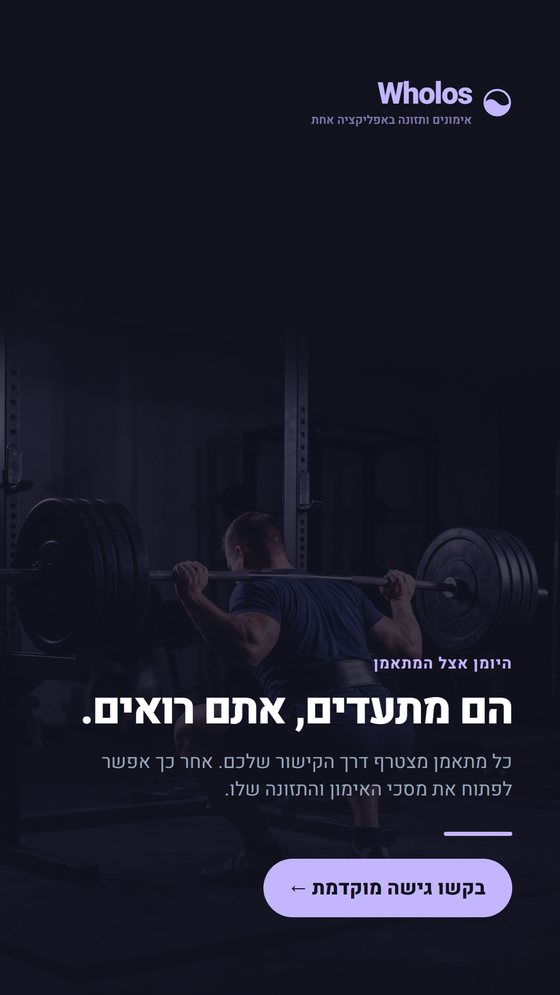

1מאמןm01-trainer
בלי לשלוח “עדכון אימון?”
המתאמן מתעד. בדשבורד רואים כמה אימונים נרשמו היום ומתי הוא נראה לאחרונה.
מחליף את שאלת המעקב היומית בנתון קונקרטי, בלי להבטיח ניהול מתאמנים מלא.
עשרה קריאייטיבים, 1080×1920, כל אחד בשתי גרסאות. המטרה: להביא אנשי מקצוע פנימה — ואיתם את המתאמנים שלהם. זה לא סט בקשת פידבק (זה נמצא בסבב 8), אלא פנייה לאיש מקצוע שיצרף את הלקוחות שלו.
הגישה אינה בהרשמה עצמית — רשימת המאמנים מאושרת ידנית. לכן ה-CTA בכל הקריאייטיבים הוא בקשו גישה מוקדמת.
4 קריאייטיבים.

המתאמן מתעד. בדשבורד רואים כמה אימונים נרשמו היום ומתי הוא נראה לאחרונה.
מחליף את שאלת המעקב היומית בנתון קונקרטי, בלי להבטיח ניהול מתאמנים מלא.

שולחים קישור הזמנה אישי. מתאמן שנכנס דרכו משויך אליכם ב-Wholos.
מראה פעולה קיימת וברורה: חיבור מתאמן למאמן דרך הזמנה אישית.

פותחים את מסכי האימון והתזונה שלו ורואים את הרישום, בתצוגה שמסומנת בבירור כמתאמן.
מתמקד ביכולת הצפייה בפועל, בלי לייחס למאמן יכולת לערוך או לרשום.

המתאמן שומר על שיחות פרטיות, ואתם רואים את מסכי האימון והתזונה שהוא תיעד.
הופך מגבלה מוצרית ברורה ליתרון מקצועי של שקיפות עם גבולות.
4 קריאייטיבים.

הוא מתעד ארוחות ב-Wholos. אתם יכולים לפתוח את מסך התזונה ולראות את מה שנרשם.
מחבר לרגע מוכר בעבודה מקצועית בלי להציג את המוצר כמחליף ייעוץ.

הארוחה נרשמת כרכיבים עם קלוריות ומאקרו, כך שיש לכם תיעוד לפתוח בשיחה המקצועית.
מציג מידע תזונתי ספציפי שהמתאמן תיעד, וממקם את איש המקצוע כמי שמפרש ומכוון.

ברשימת המתאמנים רואים כמה ארוחות כל אחד רשם היום ובסך הכול, ומתי היה פעיל לאחרונה.
משתמש בדיוק בנתונים שקיימים בדשבורד ומדבר על צורך מקצועי אמיתי.

Wholos עוזרת לרשום אימונים וארוחות. הייעוץ המקצועי נשאר שלכם, על בסיס מה שנרשם.
מכבד את מומחיות איש התזונה ומבהיר שהמוצר הוא כלי תיעוד ולא ייעוץ תזונתי.
2 קריאייטיבים.

המתאמנים מתעדים אימונים וארוחות. בדשבורד רואים פעילות, תיעוד ומועד כניסה אחרון.
מתאים למאמן ולאיש תזונה, תוך הישארות בגבולות המדדים והצפייה הקיימים.

כל מתאמן מצטרף דרך הקישור שלכם. אחר כך אפשר לפתוח את מסכי האימון והתזונה שלו.
מנסח בפשטות את מנגנון העבודה הקיים בלי להבטיח עריכה, הודעות או תוכניות.